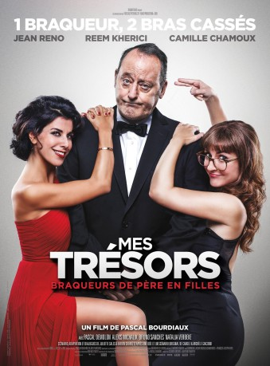

#6770 Der Meisterdieb und seine Schätze
 
 IMDB-Wertung: 5.5 / 10
IMDB-Wertung: 5.5 / 10  Metascore: 0
Metascore: 0 
Caroline (Reem Kherici) und Carole (Camille Chamoux) haben scheinbar nichts gemeinsam. Erstere ist nämlich eine ausgebuffte Taschendiebin, während Letztere sich als ganz brave Informatikerin durchschlägt. Beide mögen sich nicht besonders und am liebsten würden sie sich einfach ignorieren – wäre da nicht der blöde Umstand, dass sie Halbschwestern sind und ihr Vater Patrick (Jean Reno) ein Meisterdieb ist, der international gesucht wird. Und für seinen nächsten Coup braucht der alte Mann die Unterstützung seiner Töchter: Es geht nämlich um eine Stradivari-Violine, die stolze 15 Millionen Euro wert sein soll. Gemeinsam hecken sie einen Plan aus, um in den Besitz des begehrten Instrumentes zu kommen. Die Durchführung entpuppt sich jedoch als nicht so einfach, schließlich läuft die Familienzusammenführung alles andere als weich ab…
Jahr: 2017
Dauer: 91 Minuten
FSK: 6
Land: Frankreich Studio: Koch MediaTonspuren: DTS - ,
Untertitel: Deutsch,
Auflösung: 1080p (1920x800) Größe: 6727 MB
Genre: Komödie
Regisseur: Pascal Bourdiaux
Drehbuch: Sébastien Blanc
Soundtrack: Sinclair
Darsteller:
 Jean Reno als Patrick
Jean Reno als Patrick Reem Kherici als Caroline
Reem Kherici als Caroline Alexis Michalik als Guillaume
Alexis Michalik als Guillaume- Natalia Verbeke als Julianna Van Gaal
- Camille Chamoux als Carole
- Pascal Demolon als Romain
- Bruno Sanches als Fred
- Amory Cazal als Tobias Van Gaal
- Barbara Bolotner als La colocataire
- Raphaëline Goupilleau als Nadine
- Jérôme Dreyfuss als Le trader
- Halim Oulebsir als Le coursier
- Laurent Bateau als Le notaire
- Grégory Songelin als Le garde hôtel 1
- Kenny Douala als Le garde hôtel 2
- Aleksandra Zimny als Jeune femme boîte de nuit
- Sean Guégan als Le surfeur 1
- Gunther Van Severen als Le surfeur 2
- Laurent Lespinasse als Le pilote de l'hélicoptère
- Javier Tolosa als Le policier espagnol
- Ludovic du Plessis als Barman boîte de nuit
- Jean Reynès als Vladimir Daroff
- Olivier Cazal als Le luthier
- Thierry Juge als Client restaurant (uncredited)
Datei: X:\2017(G-M)\Meisterdieb und seine Schätze, Der (2017, FSK6, 1920x800).mkv seit 30.08.2017
Festplatte: HD 2017(A-Z)-2018(A-F)
 Es gibt insgesamt 148 Filme in der Gruppe '2017(G-M)'
Es gibt insgesamt 148 Filme in der Gruppe '2017(G-M)'